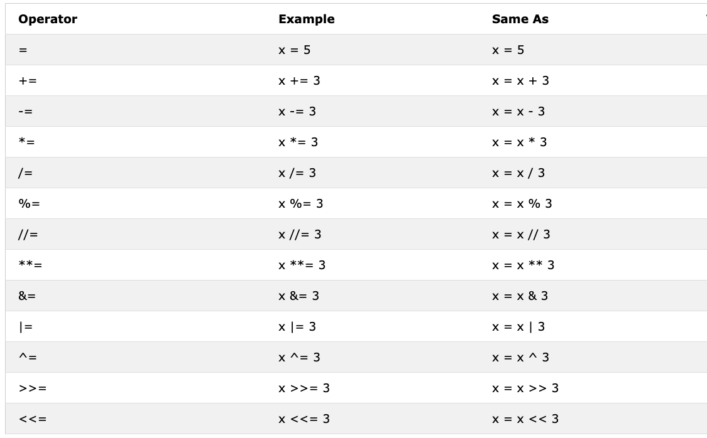
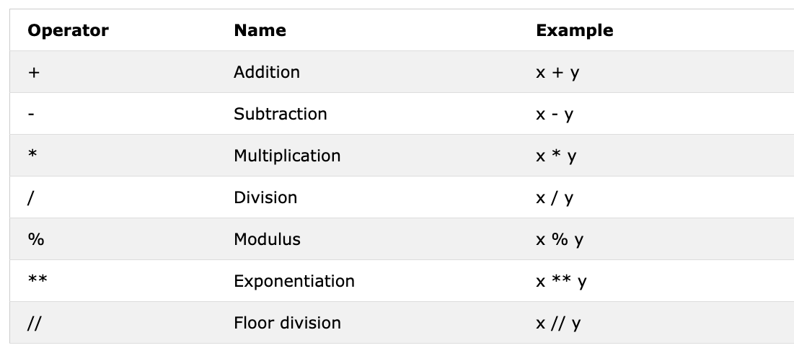
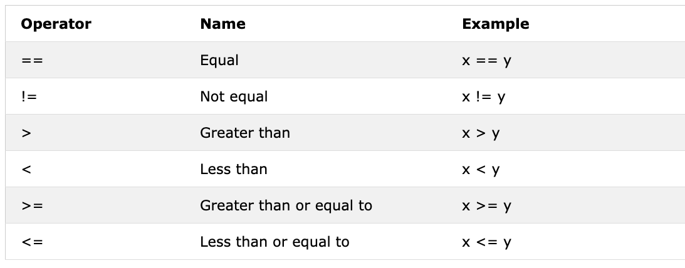
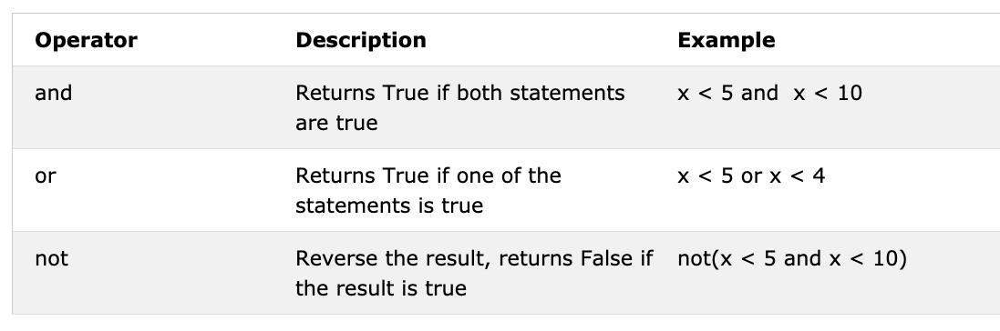

03 运算符⚓︎
布尔类型⚓︎
布尔数据类型代表两个值中的一个：True 或 False。当我们开始使用比较运算符时，这些数据类型的用途就会变得明确。T（表示True）和 F（表示False）的首字母应与JavaScript不同，大写。 示例：布尔值
print(True)
print(False)
运算符⚓︎
Python语言支持多种类型的运算符。在本节中，我们将重点介绍其中的一些。
赋值运算符⚓︎
赋值运算符用于将值赋给变量。以 = 为例。等号在数学中表示两个值相等，但在Python中，它意味着我们将一个值存储在某个变量中，我们称之为赋值或向变量赋值。下表显示了Python赋值运算符的不同类型，摘自 w3school。

算术运算符⚓︎
- 加法(+): a + b
- 减法(-): a - b
- 乘法(*): a * b
- 除法(/): a / b
- 取模(%): a % b
- 向下取整除法(//): a // b
- 幂运算(**): a ** b

示例：整数
# Python中的算术运算
# 整数
print('Addition: ', 1 + 2) # 3
print('Subtraction: ', 2 - 1) # 1
print('Multiplication: ', 2 * 3) # 6
print ('Division: ', 4 / 2) # 2.0 Python中的除法产生浮点数
print('Division: ', 6 / 2) # 3.0
print('Division: ', 7 / 2) # 3.5
print('Division without the remainder: ', 7 // 2) # 3, 不产生浮点数或余数
print ('Division without the remainder: ',7 // 3) # 2
print('Modulus: ', 3 % 2) # 1, 产生余数
print('Exponentiation: ', 2 ** 3) # 9 意味着 2 * 2 * 2
示例：浮点数
# 浮点数
print('Floating Point Number, PI', 3.14)
print('Floating Point Number, gravity', 9.81)
示例：复数
# 复数
print('Complex number: ', 1 + 1j)
print('Multiplying complex numbers: ',(1 + 1j) * (1 - 1j))
让我们声明一个变量并赋予一个数字数据类型。我将使用单个字符变量，但请记住不要养成声明此类变量的习惯。变量名称应始终具有助记性。
示例
# 在最顶部首先声明变量
a = 3 # a是一个变量名，3是整数数据类型
b = 2 # b是一个变量名，2是整数数据类型
# 算术运算并将结果分配给变量
total = a + b
diff = a - b
product = a * b
division = a / b
remainder = a % b
floor_division = a // b
exponential = a ** b
# 我应该使用sum而不是total，但sum是一个内置函数 - 尽量避免覆盖内置函数
print(total) # 如果您不使用某个字符串标记打印，您永远不知道结果来自哪里
print('a + b =', total)
print('a - b =', diff)
print('a * b =', product)
print('a / b =', division)
print('a % b =', remainder)
print('a // b =', floor_division)
print('a ** b =', exponentiation)
示例：
print('== 加法，减法，乘法，除法，取模 ==')
# 声明值并将它们组织在一起
num_one = 3
num_two = 4
# 算术操作
total = num_one + num_two
diff = num_two - num_one
product = num_one * num_two
div = num_two / num_one
remainder = num_two % num_one
# 使用标签打印值
print('total:', total)
print('difference:', diff)
print('product:', product)
print('division:', div)
print('remainder:', remainder)
让我们开始连接各种知识点，开始使用我们已经了解的知识来计算（面积、体积、密度、重量、周长、距离、力）。
# 计算圆的面积
radius = 10 # 圆的半径
area_of_circle = 3.14 * radius ** 2 # 两个*表示指数或幂
print('圆的面积：', area_of_circle)
# 计算矩形的面积
length = 10
width = 20
area_of_rectangle = length * width
print('矩形的面积：', area_of_rectangle)
# 计算物体的重量
mass = 75
gravity = 9.81
weight = mass * gravity
print(weight, 'N') # 添加重量单位
# 计算液体的密度
mass = 75 # 千克
volume = 0.075 # 立方米
density = mass / volume # 1000千克/立方米
比较运算符⚓︎
在编程中，我们比较值，使用比较运算符来比较两个值。我们检查一个值是否大于、小于或等于另一个值。以下表格显示了Python比较运算符，摘自w3shool。

print(3 > 2) # True，因为3大于2
print(3 >= 2) # True，因为3大于2
print(3 < 2) # False，因为3小于2
print(2 < 3) # True，因为2小于3
print(2 <= 3) # True，因为2小于3
print(3 == 2) # False，因为3不等于2
print(3 != 2) # True，因为3不等于2
print(len('mango') == len('avocado')) # False
print(len('mango') != len('avocado')) # True
print(len('mango') < len('avocado')) # True
print(len('milk') != len('meat')) # False
print(len('milk') == len('meat')) # True
print(len('tomato') == len('potato')) # True
print(len('python') > len('dragon')) # False
# 比较会产生True或False
print('True == True: ', True == True)
print('True == False: ', True == False)
print('False == False:', False == False)
除了上述的比较运算符之外，Python还使用：
- is：如果两个变量是相同的对象，则返回true（x is y）
- is not：如果两个变量不是相同的对象，则返回true（x is not y）
- in：如果查询的列表包含某个项目，则返回True（x in y）
- not in：如果查询的列表中不包含某个项目，则返回True（x in y）
print('1 is 1', 1 is 1) # True - 因为数据值相同
print('1 is not 2', 1 is not 2) # True - 因为1不等于2
print('A in Asabeneh', 'A' in 'Asabeneh') # True - A在字符串中找到
print('B in Asabeneh', 'B' in 'Asabeneh') # False - 没有大写B
print('coding' in 'coding for all') # True - 因为coding for all包含单词coding
print('a in an:', 'a' in 'an') # True
print('4 is 2 ** 2:', 4 is 2 ** 2) # True
逻辑运算符⚓︎
与其他编程语言不同，Python使用关键字and、or和not来表示逻辑运算符。逻辑运算符用于组合条件语句：

print(3 > 2 and 4 > 3) # True - 因为两个语句都为真
print(3 > 2 and 4 < 3) # False - 因为第二个语句为假
print(3 < 2 and 4 < 3) # False - 因为两个语句都为假
print('True and True: ', True and True)
print(3 >
2 or 4 > 3) # True - 因为两个语句都为真
print(3 > 2 or 4 < 3) # True - 因为其中一个语句为真
print(3 < 2 or 4 < 3) # False - 因为两个语句都为假
print('True or False:', True or False)
print(not 3 > 2) # False - 因为3 > 2为真，然后not True返回False
print(not True) # False - 否定，not运算符将True变为False
print(not False) # True
print(not not True) # True
print(not not False) # False
🌕 你有无穷无尽的能量。 你已经完成了第3天的挑战，你在通往伟大之路上已经走了三步。 现在锻炼一下大脑和肌肉，做一些练习吧。
💻 练习⚓︎
- 将您的年龄声明为整数变量。
- 将您的身高声明为浮点变量。
- 声明一个变量，存储一个复数。
- 编写一个脚本，提示用户输入三角形的底边和高度，并计算这个三角形的面积（面积 = 0.5 x b x h）。
输入底边：20
输入高度：10
三角形的面积是100
- 编写一个脚本，提示用户输入三角形的边a、边b和边c。计算三角形的周长（周长= a + b + c）。
输入边a：5
输入边b：4
输入边c：3
三角形的周长是12
- 使用提示获取矩形的长度和宽度。计算它的面积（面积=长度 x 宽度）和周长（周长= 2 x (长度 + 宽度)）。
- 使用提示获取圆的半径。计算面积（面积=π x r x r）和周长（c = 2 x π x r），其中π = 3.14。
- 计算y = 2x -2的斜率、x截距和y截距。
- 斜率是（m = y2-y1/x2-x1）。计算斜率和点（2, 2）和点（6,10）之间的欧几里德距离。
- 比较任务8和任务9中的斜率。
- 计算y（y = x^2 + 6x + 9）的值。尝试使用不同的x值，找出y将在哪个x值为0。
- 查找'tomato'和'dragon'的长度，并创建一个虚假的比较语句。
- 使用_and_运算符检查'python'和'dragon'中是否都有'on'。
- 我希望这门课程不会充满术语。 使用_in_运算符检查句子中是否有_术语_。
- 在'龙'和'python'中都没有'on'。
- 查找文本_python_的长度，并将该值转换为浮点数，然后将其转换为字符串。
- 偶数可以被2整除，余数为零。如何使用Python检查一个数字是否为偶数或奇数？
- 检查7除以3的地板除法是否等于2.7的int转换值。
- 检查'type('10')'是否等于'type(10)'。
- 检查int('9.8')是否等于10。
- 写一个脚本，提示用户输入小时数和每小时的费率。计算这个人的工资？
输入小时数：40
输入每小时的费率：28
您的每周收入为1120
- 写一个Python脚本，显示以下表格
1 1 1 1 1
2 1 2 4 8
3 1 3 9 27
4 1 4 16 64
5 1 5 25 125